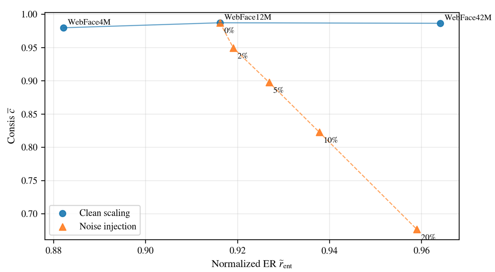

新增数百万张人脸图像后，特征可能覆盖更多有用的变化，也可能只是因为错标而变得分散。Intrinsic Quality（IQ）把表征的覆盖范围与近邻的身份标签一致性结合起来，在完整训练前为候选数据集排序。
如何判断一次数据扩容有没有价值？
我们在同一套训练与评测流程下比较不同版本的 WebFace。每个数据版本完整训练后在 MFR-ALL 上的人脸验证准确率，给出了这些版本的参照排序。实际使用时，IQ 只读取候选训练集的代理模型特征和已有身份标签，无需为每个版本另建干净验证集。
用近邻标签解释有效秩的变化
先在候选数据集上训练代理人脸识别模型，再按身份分层抽取约一万张图像。对每个归一化特征，找出余弦相似度最高的近邻，统计其中与该样本身份标签一致的比例。将所有样本的比例取平均，得到 Consis。
另一个量是归一化有效秩（ER）。它由中心化特征协方差的特征值分布计算，方差越均匀地分布在多个方向，ER 越高。主实验固定使用 IQ = 0.2 × Consis + 0.8 × ER。图中两条轨迹都向右移动，只有注入错标的轨迹同时明显向下。

扩量与错标对排序有什么影响？
WebFace 从 4M 扩至 42M 时，MFR-ALL 准确率从 90.36% 升至 96.26%，IQ 从 0.902 升至 0.968。反过来，在 WebFace12M 上随机翻转 40% 的训练身份标签，有效秩从 0.916 升至 0.994，但近邻一致性从 0.987 跌至 0.401，准确率也从 94.37% 跌至 72.01%。
把干净扩量和错标条件合并比较，论文表 3 报告 IQ 与 MFR-ALL 准确率的 Spearman 秩相关为 1.000，Pearson 相关为 0.891。前者衡量版本的次序；同样大小的 IQ 变化并不对应固定幅度的准确率变化。
相近规模的数据集如何取舍？
作者按同一身份内部的特征方差，构造了三个约 12M 规模的候选集。在相同流程下，IQ 与完整训练得到的准确率给出了相同顺序。这个实验检验的是候选集之间的选择；跨域数据或身份合并、拆分等系统性标注错误，仍需要单独验证。
| 候选数据集 | IQ | MFR-ALL 准确率 |
|---|---|---|
| WebFace12M-HighVar | 0.932 | 94.45% |
| WebFace12M | 0.930 | 94.37% |
| WebFace12M-LowVar | 0.913 | 93.04% |
引用
BibTeX
@InProceedings{pmlr-v306-chen26gw,
title = {Efficient, Validation-Free Intrinsic Quality Estimation for Large-Scale Face Recognition Datasets},
author = {Chen, Zhichao and Zhao, Yongle and Yang, Kaicheng and Yang, Meng and Xie, Yin and Feng, Ziyong},
booktitle = {Proceedings of the 43rd International Conference on Machine Learning},
series = {Proceedings of Machine Learning Research},
volume = {306},
pages = {18557--18567},
publisher = {PMLR},
year = {2026},
url = {https://proceedings.mlr.press/v306/chen26gw.html}
}